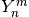
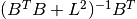

dipy.reconst.qball¶
Tools for using spherical harmonic models to fit diffusion data
References¶
- Aganj, I., et. al. 2009. ODF Reconstruction in Q-Ball Imaging With Solid
- Angle Consideration.
- Descoteaux, M., et. al. 2007. Regularized, fast, and robust analytical
- Q-ball imaging.
- Tristan-Vega, A., et. al. 2010. A new methodology for estimation of fiber
- populations in white matter of the brain with Funk-Radon transform.
- Tristan-Vega, A., et. al. 2009. Estimation of fiber orientation probability
- density functions in high angular resolution diffusion imaging.
-
class
dipy.reconst.shm.CsaOdfModel(gtab, sh_order, smooth=0, min_signal=1.0, assume_normed=False)¶ Implementation of Constant Solid Angle reconstruction method.
References
[R57] Aganj, I., et. al. 2009. ODF Reconstruction in Q-Ball Imaging With Solid Angle Consideration. Methods
cache_clear()Clear the cache. cache_get(tag, key[, default])Retrieve a value from the cache. cache_set(tag, key, value)Store a value in the cache. fit(data[, mask])Fits the model to diffusion data and returns the model fit
-
class
dipy.reconst.shm.OpdtModel(gtab, sh_order, smooth=0, min_signal=1.0, assume_normed=False)¶ Implementation of Orientation Probability Density Transform reconstruction method.
References
[R58] Tristan-Vega, A., et. al. 2010. A new methodology for estimation of fiber populations in white matter of the brain with Funk-Radon transform. [R59] Tristan-Vega, A., et. al. 2009. Estimation of fiber orientation probability density functions in high angular resolution diffusion imaging. Methods
cache_clear()Clear the cache. cache_get(tag, key[, default])Retrieve a value from the cache. cache_set(tag, key, value)Store a value in the cache. fit(data[, mask])Fits the model to diffusion data and returns the model fit
-
class
dipy.reconst.shm.QballModel(gtab, sh_order, smooth=0, min_signal=1.0, assume_normed=False)¶ Implementation of regularized Qball reconstruction method.
References
[R60] Descoteaux, M., et. al. 2007. Regularized, fast, and robust analytical Q-ball imaging. Methods
cache_clear()Clear the cache. cache_get(tag, key[, default])Retrieve a value from the cache. cache_set(tag, key, value)Store a value in the cache. fit(data[, mask])Fits the model to diffusion data and returns the model fit
-
class
dipy.reconst.shm.ResidualBootstrapWrapper(signal_object, B, where_dwi, min_signal=1.0)¶ Returns a residual bootstrap sample of the signal_object when indexed
Wraps a signal_object, this signal object can be an interpolator. When indexed, the the wrapper indexes the signal_object to get the signal. There wrapper than samples the residual boostrap distribution of signal and returns that sample.
-
class
dipy.reconst.shm.SphHarmFit(model, shm_coef, mask)¶ Diffusion data fit to a spherical harmonic model
Methods
odf(sphere)Samples the odf function on the points of a sphere -
odf(sphere)¶ Samples the odf function on the points of a sphere
Parameters: sphere : Sphere
The points on which to sample the odf.
Returns: values : ndarray
The value of the odf on each point of sphere.
-
-
class
dipy.reconst.shm.SphHarmModel(gtab, sh_order, smooth=0, min_signal=1.0, assume_normed=False)¶ The base class to sub-classed by specific spherical harmonic models of diffusion data
Methods
cache_clear()Clear the cache. cache_get(tag, key[, default])Retrieve a value from the cache. cache_set(tag, key, value)Store a value in the cache. fit(data[, mask])Fits the model to diffusion data and returns the model fit -
fit(data, mask=None)¶ Fits the model to diffusion data and returns the model fit
-
-
dipy.reconst.shm.bootstrap_data_array(data, H, R, permute=None)¶ Applies the Residual Bootstraps to the data given H and R
data must be normalized, ie 0 < data <= 1
This function, and the bootstrap_data_voxel function, calculat residual-bootsrap samples given a Hat matrix and a Residual matrix. These samples can be used for non-parametric statistics or for bootstrap probabilistic tractography:
References
[R61] J. I. Berman, et al., “Probabilistic streamline q-ball tractography using the residual bootstrap” 2008. [R62] HA Haroon, et al., “Using the model-based residual bootstrap to quantify uncertainty in fiber orientations from Q-ball analysis” 2009. [R63] B. Jeurissen, et al., “Probabilistic Fiber Tracking Using the Residual Bootstrap with Constrained Spherical Deconvolution” 2011.
-
dipy.reconst.shm.bootstrap_data_voxel(data, H, R, permute=None)¶ Like bootstrap_data_array but faster when for a single voxel
data must be 1d and normalized
-
dipy.reconst.shm.hat(B)¶ Returns the hat matrix for the design matrix B
-
dipy.reconst.shm.lazy_index(index)¶ Produces a lazy index
Returns a slice that can be used for indexing an array, if no slice can be made index is returned as is.
-
dipy.reconst.shm.lcr_matrix(H)¶ Returns a matrix for computing leveraged, centered residuals from data
if r = (d-Hd), the leveraged centered residuals are lcr = (r/l)-mean(r/l) ruturns the matrix R, such lcr = Rd
-
dipy.reconst.shm.normalize_data(data, where_b0, min_signal=1.0, out=None)¶ Normalizes the data with respect to the mean b0
-
dipy.reconst.shm.randint(low, high=None, size=None)¶ Return random integers from low (inclusive) to high (exclusive).
Return random integers from the “discrete uniform” distribution in the “half-open” interval [low, high). If high is None (the default), then results are from [0, low).
Parameters: low : int
Lowest (signed) integer to be drawn from the distribution (unless
high=None, in which case this parameter is the highest such integer).high : int, optional
If provided, one above the largest (signed) integer to be drawn from the distribution (see above for behavior if
high=None).size : int or tuple of ints, optional
Output shape. If the given shape is, e.g.,
(m, n, k), thenm * n * ksamples are drawn. Default is None, in which case a single value is returned.Returns: out : int or ndarray of ints
size-shaped array of random integers from the appropriate distribution, or a single such random int if size not provided.
See also
random.random_integers- similar to randint, only for the closed interval [low, high], and 1 is the lowest value if high is omitted. In particular, this other one is the one to use to generate uniformly distributed discrete non-integers.
Examples
>>> np.random.randint(2, size=10) array([1, 0, 0, 0, 1, 1, 0, 0, 1, 0]) >>> np.random.randint(1, size=10) array([0, 0, 0, 0, 0, 0, 0, 0, 0, 0])
Generate a 2 x 4 array of ints between 0 and 4, inclusive:
>>> np.random.randint(5, size=(2, 4)) array([[4, 0, 2, 1], [3, 2, 2, 0]])
-
dipy.reconst.shm.real_sph_harm(m, n, theta, phi)¶ Compute real spherical harmonics, where the real harmonic  is defined to be:
Real() * sqrt(2) if m > 0 if m == 0 Imag() * sqrt(2) if m < 0This may take scalar or array arguments. The inputs will be broadcasted against each other.
Parameters: m : int
|m| <= nThe order of the harmonic.
n : int
>= 0The degree of the harmonic.
theta : float [0, 2*pi]
The azimuthal (longitudinal) coordinate.
phi : float [0, pi]
The polar (colatitudinal) coordinate.
Returns: y_mn : real float
The real harmonic sampled at theta and phi.
See also
scipy.special.sph_harm
Compute real spherical harmonics as in fibernavigator, where the real harmonic is defined to be:
Imag(:math:`Y^m_n`) * sqrt(2) if m > 0 :math:`Y^m_n` if m == 0 Real(:math:`Y^|m|_n`) * sqrt(2) if m < 0
This may take scalar or array arguments. The inputs will be broadcasted against each other.
Parameters: sh_order : int
even int > 0, max spherical harmonic degree
theta : float [0, 2*pi]
The azimuthal (longitudinal) coordinate.
phi : float [0, pi]
The polar (colatitudinal) coordinate.
Returns: y_mn : real float
The real harmonic sampled at theta and phi as implemented in the FiberNavigator [R64].
m : array
The order of the harmonics.
n : array
The degree of the harmonics.
References
[R64] (1, 2) http://code.google.com/p/fibernavigator/
-
dipy.reconst.shm.real_sph_harm_mrtrix(sh_order, theta, phi)¶ Compute real spherical harmonics as in mrtrix, where the real harmonic is defined to be:
Real(:math:`Y^m_n`) if m > 0 :math:`Y^m_n` if m == 0 Imag(:math:`Y^|m|_n`) if m < 0
This may take scalar or array arguments. The inputs will be broadcasted against each other.
Parameters: sh_order : int
The maximum degree or the spherical harmonic basis.
theta : float [0, pi]
The polar (colatitudinal) coordinate.
phi : float [0, 2*pi]
The azimuthal (longitudinal) coordinate.
Returns: y_mn : real float
The real harmonic sampled at theta and phi as implemented in mrtrix. Warning: the basis is Tournier et al 2004 and 2007 is slightly different.
m : array
The order of the harmonics.
n : array
The degree of the harmonics.
-
dipy.reconst.shm.sf_to_sh(sf, sphere, sh_order=4, basis_type=None, smooth=0.0)¶ Spherical function to spherical harmonics (SH).
Parameters: sf : ndarray
Values of a function on the given sphere.
sphere : Sphere
The points on which the sf is defined.
sh_order : int, optional
Maximum SH order in the SH fit. For sh_order, there will be
(sh_order + 1) * (sh_order_2) / 2SH coefficients (default 4).basis_type : {None, ‘mrtrix’, ‘fibernav’}
Nonefor the default dipy basis,mrtrixfor the MRtrix basis, andfibernavfor the FiberNavigator basis (defaultNone).smooth : float, optional
Lambda-regularization in the SH fit (default 0.0).
Returns: sh : ndarray
SH coefficients representing the input function.
-
dipy.reconst.shm.sh_to_sf(sh, sphere, sh_order, basis_type=None)¶ Spherical harmonics (SH) to spherical function (SF).
Parameters: sh : ndarray
SH coefficients representing a spherical function.
sphere : Sphere
The points on which to sample the spherical function.
sh_order : int, optional
Maximum SH order in the SH fit. For sh_order, there will be
(sh_order + 1) * (sh_order_2) / 2SH coefficients (default 4).basis_type : {None, ‘mrtrix’, ‘fibernav’}
Nonefor the default dipy basis,mrtrixfor the MRtrix basis, andfibernavfor the FiberNavigator basis (defaultNone).Returns: sf : ndarray
Spherical function values on the sphere.
-
dipy.reconst.shm.smooth_pinv(B, L)¶ Regularized psudo-inverse
Computes a regularized least square inverse of B
Parameters: B : array_like (n, m)
Matrix to be inverted
L : array_like (n,)
Returns: inv : ndarray (m, n)
regularized least square inverse of B
Notes
In the literature this inverse is often written . However here this inverse is implemented using the psudo-inverse because it is more numerically stable than the direct implementation of the matrix product.
-
dipy.reconst.shm.sph_harm_ind_list(sh_order)¶ Returns the degree (n) and order (m) of all the symmetric spherical harmonics of degree less then or equal it sh_order. The results, m_list and n_list are kx1 arrays, where k depends on sh_order. They can be passed to real_sph_harm.
Parameters: sh_order : int
even int > 0, max degree to return
Returns: m_list : array
orders of even spherical harmonics
n_list : array
degrees of even spherical harmonics
See also